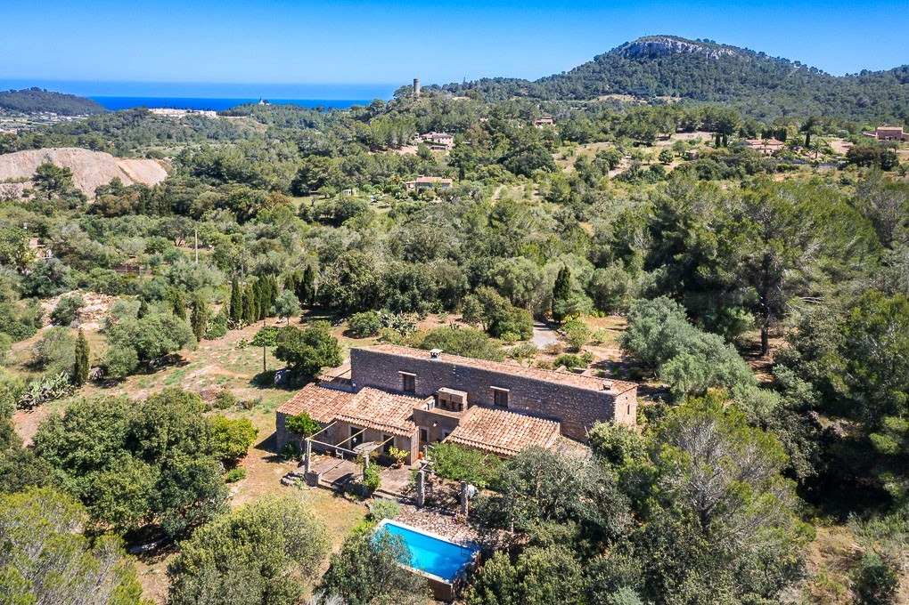

€1.200.000
Son Servera, Mallorca
Open the listingPreferred east pocket: full honey exposed-stone façades (not plaster), arched courtyard, terracotta roof, uncovered beams and fireplaces inside, and a finished private pool framed by vine-clad stone pergola — classic old-mixed-with-cozy rather than sleek contemporary. Two separately accessible dwellings on ~5,909 m² in a designated protected setting with green/mountain/open views toward the coast. At the €1.2M cap it still punches above typical under-cap Mallorca stock that is reforma, no-pool, or weak façades.
Opened 9 Sep 2026. E&V Artá Property ID W-02W3VX (uuid 3c38c06b-f058-593c-bdee-70c8be5fc66c); price €1,200,000; ACTIVE today. Features: hasSwimmingPool, garden, terrace, fireplace, garage, built-in kitchen. Specs: 8 rooms / 6 beds / 2 baths / ~310 m² total / ~251 m² living / ~5,909 m² plot / year 1900 / energy class E. Updated 2026-09-07T03:07:28Z. Photos (uploadcare) confirm exposed-stone exterior + finished private pool. Only 2 baths across two units is the main caveat. Distinct from board east stock (betlem*, sant-llorenc*, cala-*). Not Sa Caleta. Not on prior board or 8 Sep keepers.